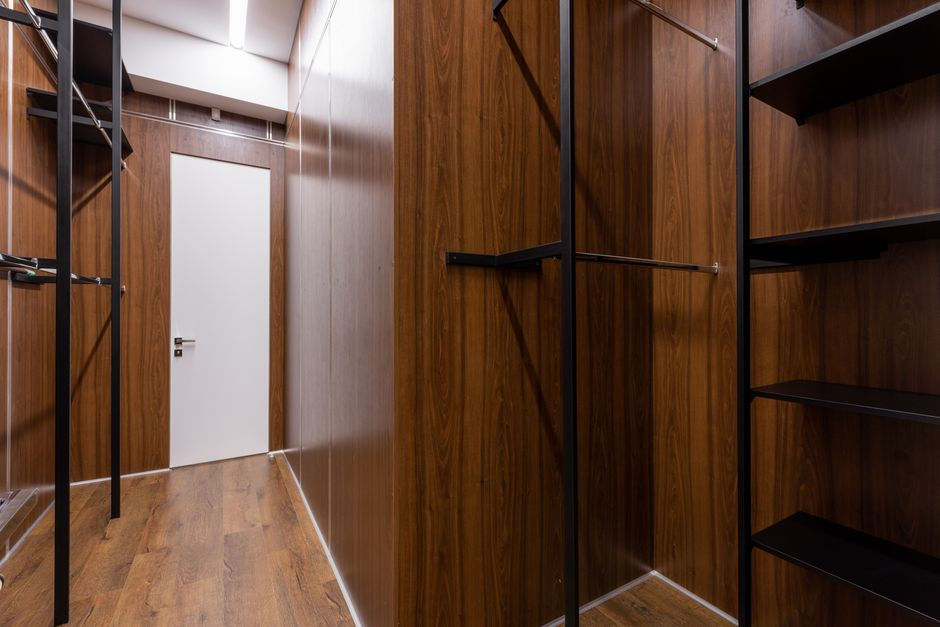

Steps to Install High Wall Shelves for Efficient Space Organization
If you're looking to optimize your small space, wall-mounted shelves can be a game-changer. This guide will walk you through installing high wall shelves, a practical solution that adds storage without taking up precious floor space. Follow these steps to ensure your shelves are both functional and stylish.

Photo: gorden murahmalang / Pexels
Gather Your Tools and Materials
Before you begin, gather all necessary tools and materials. For this project, you will need: - Measuring tape - Level - Screwdriver or drill - Hammer - Shelf brackets or anchors - Wall anchors (expanding or masonry) - Self-tapping screws - Paint or sealant (optional) - Safety glasses and work gloves
Ensure you have all the required tools on hand before starting. This will save you time and frustration later.
Measure and Plan Your Shelves
Photo: Thirdman / Pexels
Measure the walls where you plan to install the shelves. Determine the best placement to maximize storage while maintaining a functional layout. For example, in a small kitchen, consider installing shelves above the stove or refrigerator to store spices, utensils, and baking supplies.
Example Scenario
Let’s say you have a kitchen wall that is 10 feet long. You decide to place a 4-foot shelf at 4 feet high and another 2-foot shelf at 6 feet high. This setup allows you to keep frequently used items within easy reach while storing less frequently accessed items higher up.
Install the Shelf Brackets
Photo: PIRO4D / Pixabay
Using a pencil, mark the locations for the shelf brackets on the wall. Ensure these marks are level using a spirit level. This step is crucial to ensure your shelves are straight and secure.
Step-by-Step Example
- Measure the distance between brackets: For a 4-foot shelf, use 20 inches as the standard spacing between each bracket. This will provide enough support for most shelf weights.
- Mark the spots: Use a pencil to mark 20-inch intervals from the top of the wall down to the desired height of the shelf.
- Insert anchors: Depending on your wall type (drywall, brick, etc.), use appropriate wall anchors. For drywall, use toggle bolts or plastic anchors. For masonry walls, use masonry screws.
- Attach brackets: Screw the shelf brackets to the wall using self-tapping screws. Ensure they are snug but not over-tightened.
Secure and Level the Shelves
Once the brackets are securely fastened, place the shelves on top. Use a level to ensure they are perfectly horizontal. Adjust the brackets as needed to ensure the shelves are straight and stable.
Practical Example
After attaching the brackets to the wall, place the 4-foot shelf on top. Check its levelness with a spirit level. If it’s not quite right, loosen the screws slightly, adjust the bracket, and re-tighten. Repeat this process for the 2-foot shelf, ensuring both are perfectly horizontal.
Finishing Touches
Finally, add finishing touches to your shelves to enhance their appearance and functionality. This might include painting the brackets and shelves, adding protective varnish, or simply arranging items in a way that maximizes storage while maintaining a tidy look.
Example Scenario
For a cohesive look, choose a color that complements your existing decor. If your shelves are exposed metal, you could paint them a shade of grey or white. Alternatively, if you have a minimalist aesthetic, a clear varnish might be the best choice to maintain a sleek look.
By following these steps, you can efficiently install high wall shelves that not only add storage to your small space but also enhance its organization and aesthetic appeal.
Recommended products
As an Amazon Associate, I earn from qualifying purchases.